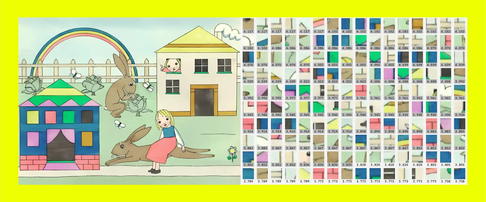

20.12.2025
20.12.2025
What does design look like in a digital world increasingly dominated by artificial intelligence? Design professionals reading industry headlines, alongside the vast spectrum of opinion pieces and think posts on this question are likely to have mixed reactions. Responses range from anxiety to optimism, excitement to dread, but we must approach this technology carefully and strategically, without being pulled to either extreme.

The design community has been in a state of flux since long before the advent of AI. We’ve had to navigate economic uncertainty and a prolonged cost of living crisis, with businesses tightening budgets, demanding greater efficiency and limiting work to smaller, lower-risk projects.The industry has slowed down and many talented designers find themselves out of work or thrust into the unstable world of freelance contracts. Whilst it was not the sole cause, the introduction and rapid growth of AI has undoubtedly fuelled the volatility of the industry.
Creative, advertising, media and tech sectors have been beset by redundancies, with the latter arguably the hardest hit. 2025 saw bosses devaluing experts and specialists in favour of their shiny new toy, from Duolingo replacing contract workers with AI to Microsoft laying off thousands of workers whilst investing heavily in the technology. Similar cuts have been made at Google, Amazon, Spotify and Meta despite growing profits, but this trend isn’t exclusive to the caricature villains of Silicon Valley.
Labour disputes erupted across the entertainment industry in 2023, with Screen Actors Guild – American Federation of Television and Radio Artists (SAG-AFTRA) and Writers Guild of America (WGA) workers calling for protections against improper use of AI. This was followed by a further strike by video game voice actors and motion capture artists in 2024 which concluded earlier this year. Each dispute included concerns about employers’ ability to train AI to replicate workers without consent or fair compensation, referring to an “existential threat”. Actor SA Griffin said in an interview with Dana Cloud and Nina Lozano
It happened in 2000 when we got the Internet. This is really bigger than that, because the advent of artificial intelligence is Promethean. This isn’t about ourselves. What we represent is the same thing everyone’s gonna be facing.
Griffin’s prediction was spot on, as we head into 2026 expecting AI to affect even more jobs and sectors. For bosses, AI provides an enticing opportunity, a new – or metamorphosed – means of labour, which maximises their profits by diminishing or degrading human labour and our associated cost. This presents a threat to not only jobs, but entire industries. In the Grundrisse Marx explains the development of technology and its impact on the worker
Once adopted into the production process of capital, the means of labour passes through different metamorphoses, whose culmination is the machine, or rather, an automatic system of machinery… set in motion by an automaton, a moving power that moves itself; this automaton consisting of numerous mechanical and intellectual organs, so that the workers themselves are cast merely as its conscious linkages.
In contrast to the digitisation of design where workers were able to apply their skills in new ways with new instruments, the introduction of AI to the creative process instead transforms the worker into a tool of the machine. Marx continues
The worker’s activity… is posited in such a way that it merely transmits the machine’s work, the machine’s action, on to the raw material – supervises it and guards against interruptions. Not as with the instrument, which the worker animates and makes into his organ with his skill and strength, and whose handling therefore depends on his virtuosity. Rather, it is the machine which possesses skill and strength in place of the worker, is itself the virtuoso, with a soul of its own in the mechanical laws acting through it… The worker’s activity, reduced to a mere abstraction of activity, is determined and regulated on all sides by the movement of the machinery, and not the opposite.
The ‘abstraction of activity’ that Marx refers to could be what the future of design holds. Workers losing control over our labour, surrendering our skills and overseeing machine processes. The role of a designer transformed into a data inputter, feeding information to generative AI models via prompts, checking for errors and inaccuracies, refining and repeating this process over and again until the desired output is achieved. This is a bleak illustration of the soulless, alienating future of work that the capitalist class is paving for us.
According to the World Economic Forum (WEF)’s latest ‘Future of Jobs’ report, graphic designer is the eleventh fastest declining job based on employer predictions. This shift is ‘driven by both AI and information processing technologies as well as by broadening digital access’ despite a prediction as a job of moderate growth only two years ago. The same report predicts user interface (UI) and user experience (UX) design and their related skills to be the eighth fastest growing job ‘driven by technological advancements.’ The report cites the skills required in these jobs, with complex decision-making, critical problem solving and understanding the impact of audience behaviour considered ‘fast-growing skills’. These are all areas where AI clearly falls short, where the skill of the worker cannot be directly replaced by a machine. This should be seen as a positive, as understanding its weaknesses (along with its strengths) will be key to halting the redefinition of our jobs and preserving worker agency.
The Hollywood disputes resulted in victories for workers, with contracted terms for screenwriters including ‘regulations for the use of artificial intelligence’ preventing companies from using AI to write or rewrite literary material, from forcing writers to use AI in their work, or from not disclosing any material that has been generated with AI. This is a baseline for how workers might go about demanding protections against improper use of AI, and it shows us the power we have to protect the integrity of our work through collective organisation.
This week British actors union Equity held an indicative ballot on AI protections, to which members voted overwhelmingly in favour of taking action, with 99.6% voting ‘Yes’ on a 75.1% turnout. The vote relates to Equity’s agreement with Pact, the trade body representing many production companies, which now faces pressure from workers to enshrine AI protections into its agreements or risk industrial action.
In tech, workers are also beginning to organise. Unite the Union has seen growing membership in its Digital & Tech branch, whilst the United Tech & Allied Workers (UTAW) branch of the Communication Workers Union, is currently engaged in a campaign at Google with demands around AI:
We demand that Google takes immediate action to protect the integrity of its AI technologies and commits to a future where the company prioritizes human rights over militarization and surveillance. Google has long been a leader in technological innovation, but it is now crucial that the company aligns its work with ethical principles that protect humanity and the global community. We call on Google to uphold and strengthen its AI Principles to ensure that its technology is not used for harm or to facilitate violence.
As UTAW’s demands show, the problem with AI is not necessarily the technology itself, but how it may be used and manipulated by those who own and control it. This is particularly relevant in the case of Google, who are one of the tech giants developing its own AI technologies through its DeepMind subsidiary. UTAW’s demands follow a letter signed by 200 DeepMind workers against AI being used for warfare, which includes a contract with the Israeli military. In response, Alphabet (Google’s parent company) updated its AI principles removing a commitment not to use it for weapons or surveillance. As WGA and SAG-AFTRA workers demonstrated, collectively we can restrict the ways in which bosses can use technology to replace or undermine workers, but this must also extend to how it is used outside of the workplace.
As the case of Google highlights, the dangers that AI presents in the wrong hands are real and severe. Comparisons can be made with the co-option of social media by the right, encouraged by a tech elite who stripped these platforms of their democratic potential in order to monetise our attention. As Richard Seymour argues in The Twittering Machine
The social industry has created an addiction machine, not as an accident, but as a logical means to return value to its venture capitalist investors.
The growing and emboldened far-right have been exploiting our addiction to social media in order to spread their toxic ideology for a long time, so it doesn’t take a great leap to imagine this extended to AI under the stewardship of the same aforementioned tech elite. We have already begun to see this with Elon Musk’s xAI, having long promoted right wing talking points on X, releasing its AI chatbot Grok with in-built racist and fascist tendencies. The dangers of realising big tech’s dystopian vision for the future cannot be understated in this context and that’s before we even begin to think about the human and environmental cost of developing and maintaining these technologies. But removed from the control of the capitalists and placed in the hands of workers, AI can still become a useful instrument.
At this point, it’s worth noting that these products (at least the ones available to the public) are far less capable than the overhyped claims made by Sam Altman and others would suggest. Despite gradual improvements, generative AI models can only produce adequate visual output at best. Low quality AI slop continues to litter the digital landscape and is often used to back up reactionary right-wing propaganda. The literary patterns of products like OpenAI’s ChatGPT, Anthropic’s Claude and Google’s Gemini are repetitive and easy to spot, but still dominate a variety of online platforms. AI hallucinates frequently, effectively lying to the unsuspecting user, manipulating their behaviour and leading to the spread of misinformation. Whilst all of this is true, many critiques of generative AI’s inferiority assume that its output is the finished product. Indeed, this is how most people use it and how capitalists view its role in production.
In order for us to understand the potential benefits of the technology to workers, we can’t concede its use as our replacement, but rather as a small part of a much bigger process. We must also understand designers as innovators, where AI models trained on existing data do not have that capacity – it’s our work that it’s learning from. But design relies on creativity, imagination and true understanding. This can only be produced by workers, where the best AI can do is generate new versions of what has already come before, reproducing or adapting what we have already created.
Despite the limitations of generative AI, many designers are already incorporating tools into their workflows to improve processes and hasten laborious tasks. In research, for example, AI can help with synthesis, breaking down complex data into understandable information ready for us to interpret and act on. In ideation, it can help us to quickly and easily share a creative vision. In testing, it can help with rapid prototyping, enabling us to learn more about our ideas before investing too much time in them. It can do none of these things alone, and requires workers to do the research, construct the strategy, imagine the idea, sketch and map the solution – all of the thinking and much of the doing. In this context, it becomes a tool of the worker and not the other way around.
But just as we can’t stand for generative AI being used as the worker’s replacement, we can’t let its improvements to our processes become corrupted by bosses seeking to maximise profit. We have to demand the protection of our time despite the efficiencies that AI may present to them, allowing more space for thought, experimentation, exploration and creation.
Fundamentally, I believe the role of design is to make the world a better and more beautiful place through understanding, communicating and connecting with people, and crafting artwork, products and services that make lives better and improve the human experience. This, by definition, is at odds with capitalism. But as revolutionaries we believe in a world beyond this system, where the worker has full agency and autonomy over their labour. We fight for a future where technology is developed sustainably and according to need, far from the exploitative, militaristic and imperialistic practices of global capitalism; where AI is not used to subjugate workers, but as a tool to liberate us from the alienation of work. In order to achieve this, we must take the metaphorical sledgehammer not to the machine, but to the one who owns it.
A version of this article was originally published by rs21